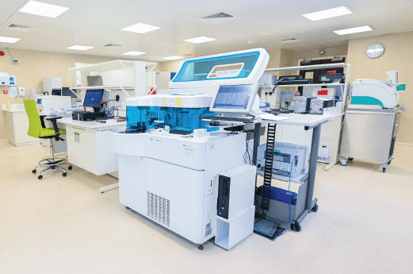
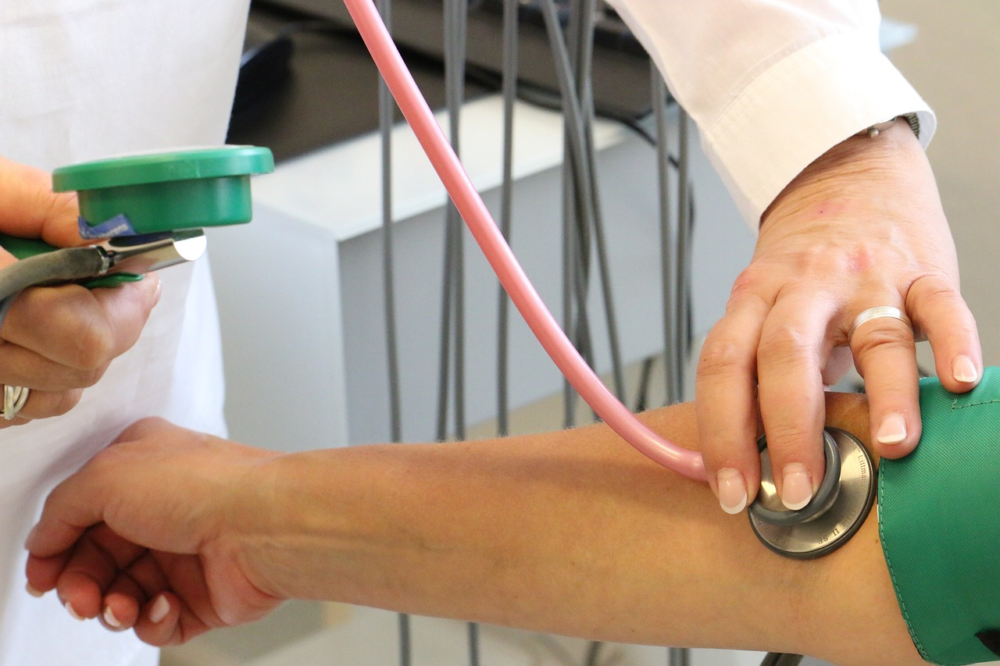
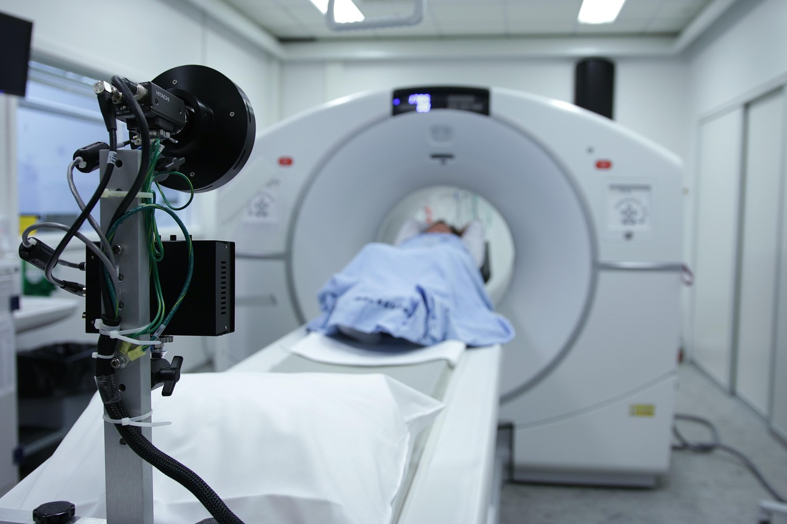

Our medical services





We provide top-quality medical care with the latest technologies to ensure your well-being.
Read moreA highly qualified medical team dedicated to offering the best healthcare solutions.
Read moreBook your appointment quickly and easily through our online system.
Read more
Specialized in diagnosing and treating ear, nose, and throat disorders, as well as hearing and balance issues
Diagnosis and treatment of neurological disorders such as epilepsy, stroke, and chronic headaches
Comprehensive oral and dental care, including fillings, orthodontics, and gum treatments
Specialized in diagnosing and treating heart diseases and high blood pressure using advanced medical technology
Diagnosis and treatment of bone and joint problems, fractures, arthritis, and osteoporosis
Specialized in children's healthcare from newborns to adolescents, ensuring their growth and development
We are committed to providing high-quality medical care through a specialized medical team, using the latest technologies to ensure the best patient experience
100%
100%
100%